<br>
### Week 8: CNC + Molding and Casting
This week's project was to (1) create something on the CNC and (2) mold and cast something. I was especially excited for this week because I've wanted to learn how to us a CNC ever since I started watching maker videos on YouTube (so, a while!). I started with the CNC.
####CNC
First, as instructed, I cut something simple on the ShopBot during lab. I quickly whipped up this ornament design in Aspire and cut it with Ibrahim's help. Because OSB sucks, the middle of the A splintered out while cutting, but it otherwise came out well. I filed and sanded the sides after it came off the ShopBot. I don't have the time this week, but around Christmas, I might turn it into an ornament by painting the OSB piece and tying a ribbon around the hole.
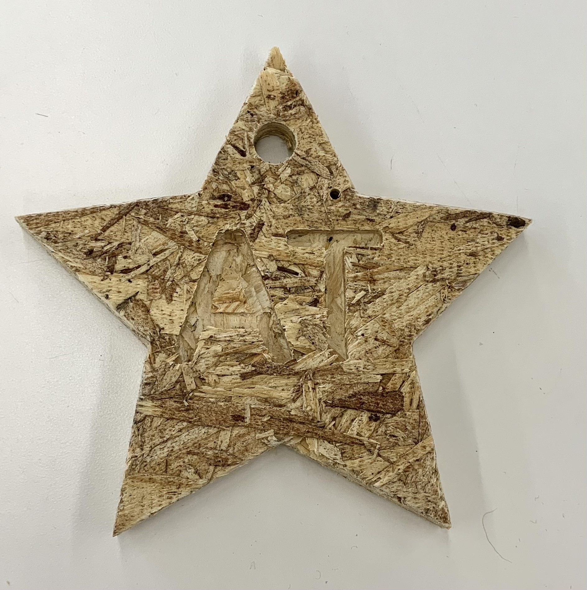
At first, I wanted to create a topographic map of Massachusetts, similar to [this](https://www.instructables.com/CNC-Topographical-Wooden-State/) map of Texas created by some of my favorite YouTubers. I started to follow their tutorial, but quickly ran into issues trying to pull topographic data from the internet. I spent several hours exploring different data sources, from the US Geological Service (didn't let me download a map without paying for it) to MassMapper, a Massachusetts state dataset (only let me download tiny pieces of the state at a time and had contours that were way too detailed) to Garmin Topographical Maps from GPS File Depot (the map said it had contours then just ... didn't). Sadly, none of the data sources wound up being functional, so I decided to ditch this idea for another time.
Instead, I pivoted to making a map of the state that showed rivers, a much more accessible form of data than topographical data. To keep things as simple as possible, I used Adobe Illustrator (because I'm already very familiar with it and it exports .dxfs just fine) to trace this image of the state and its rivers. I wasn't totally accurate because I'm making this map as wall art, rather than as an actual geographically accurate map of MA rivers.
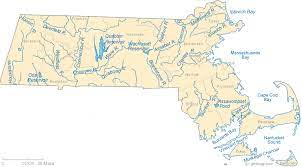
After tracing, I had this vector image, which I exported as a .dxf. Download it <a download href='./MArivers.dxf'>here!</a>
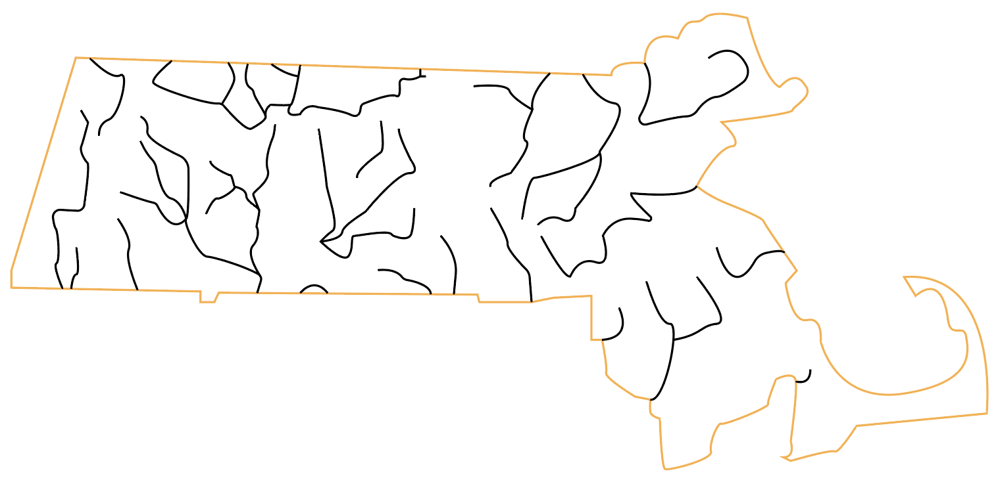
Once the file was prepped, I took it over to the ShopBot. I measured the thickness and size of my plywood and put that in Aspire, then nailed a piece of plywood to the CNC using the nail gun and polymer nails. I then changed the settings so the outline of MA would cut all the way through, except for four tabs on the straight sides to hold the piece in. I set the machine to cut outside the line to get the shape I want. I'm anticipating losing some of the detail because of the width of the bit (1/8 inch), but I don't particularly care because I don't really need a super accurate map. Then, for the river lines, I set the machine to cut along the line and to cut 5 mm into the material. Finally, I ordered the cuts so the engraving went before the state outline. Sadly, it didn't cut all the way through, and I removed the plywood piece before I realized that. I should've just left it in and corrected the cut depth. Lesson learned!
I was able to get the piece out without much trouble a couple whacks with a hammer and sawing around the edges. It was somewhat splintered at the edges and a small piece broke off.
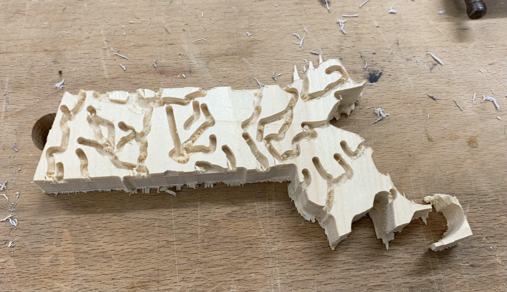
After some filing/sanding, plus wood gluing the small piece back on, here's how it came out. I'm pretty happy with it!
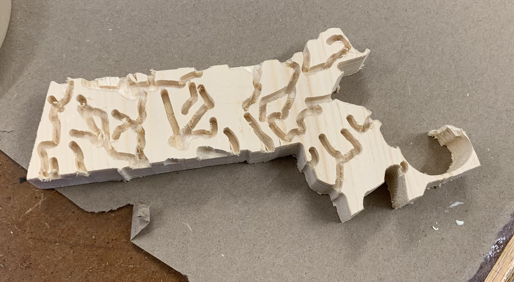
####Molding and Casting
For my molding and casting project, as soon as Nathan mentioned food-safe silicone, I knew I wanted to make something out of chocolate. I've worked with chocolate before, making fancy bonbons with my own silicone molds, so I was super excited at the chance to make my own. I wanted to make chocolate bars for my best friend and boyfriend to celebrate how awesome they are, so I started by making designs of these awards for them (download the .dxf <a download href='./Badges.dxf'>here.</a>
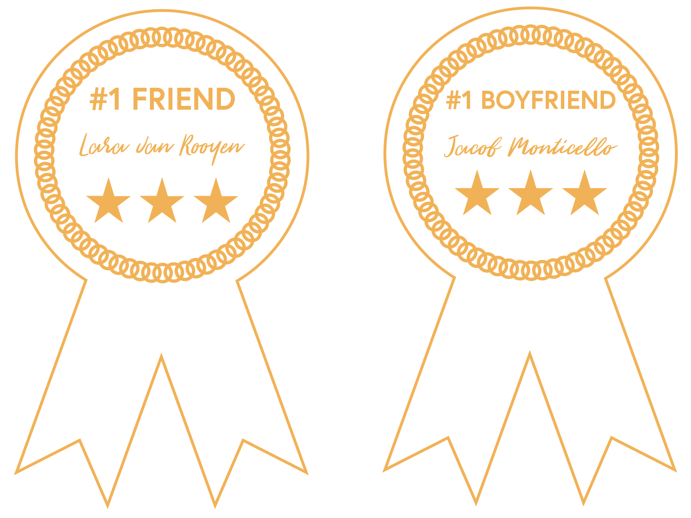
With all these little details, I figured the best way to start would be by making a positive by 3D printing. I imported the .dxf of my design into Fusion to make them 3D (download my STL <a download href='./Badges.stl'>here</a>). After slicing the file in Prusa Slicer (download gcode <a download href='./Badges.gcode'>here</a>), I took it to the Prusa. Eight hours later, they were done, and they turned out so well! Once they were done, I gave them a thorough wash with dishsoap and water to help make them food-safe enough, then let them dry completely.
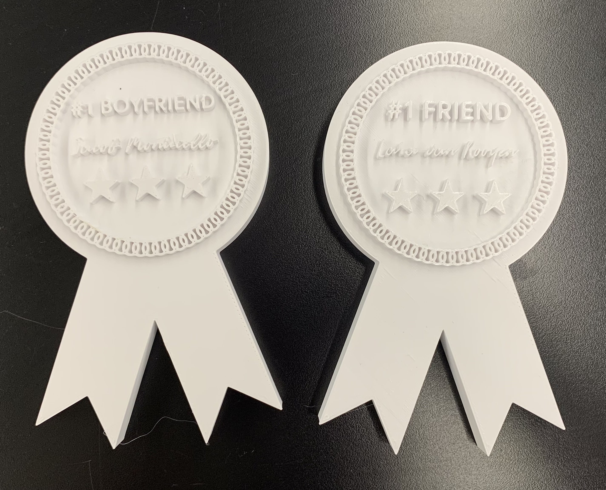
I grabbed a tupperware from my room to serve as the holder for the silicone mold. After seeing how much silicone I'd need to do both awards, I decided to only make a mold of the one for my boyfriend (sorry to my best friend...). I know I made them pretty large, but I wanted them to be big enough to hold a whole chocolate bar's worth of chocolate, and to increase the chances that the little details would come out. I mixed up two cups (about 440 mL) worth of Sorta Clear 37, the lab's food-safe silicone. It was incredibly sticky and very difficult to work with. I first put a couple spoonfuls into the part of the award with the letters, using a clean toothpick to encourage the silicone into each of the crevices. Then, I put the rest of the silicone in the tupperware and plopped the award in face-down. I tapped it on the counter to remove bubbles, though that was not super successful, given how many bubbles stayed in the silicone because of how sticky it was. Finally, I taped together bundles of popsicle sticks and placed them on top of the award to keep it within the silicone. Once I put the tupperware lid on, the popsicle stick stacks kept the award in place.
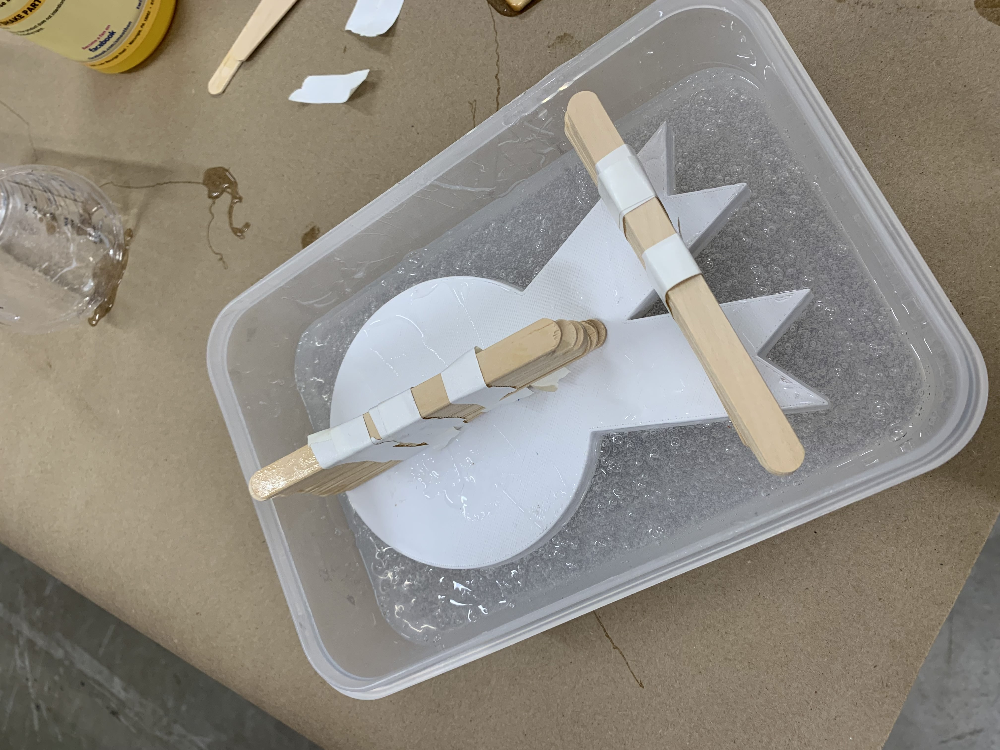
I was not optimistic about the mold when I finished, but when I removed it the next morning, it came out so well! The cured silicone is really stiff, which made removing it a big struggle (I wound up wedging a spoon between the silicone and tupperware and pulling until it came out), but made the details really pop.
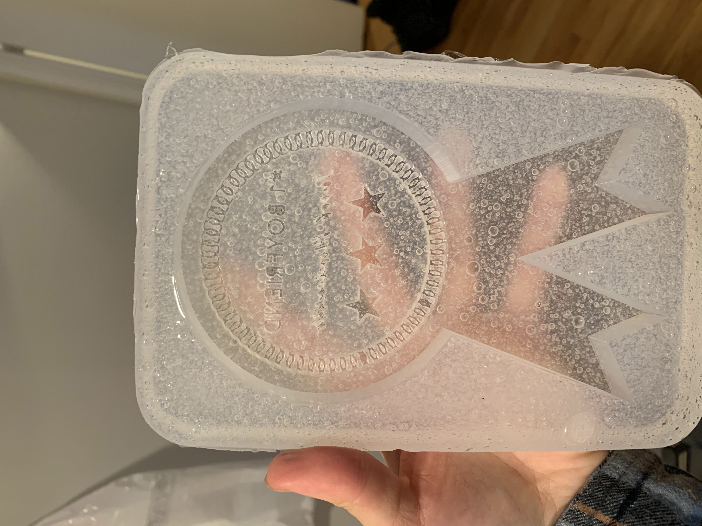
Once the mold was done, it was time to temper the chocolate. My plan was to lay down a layer of chocolate, then add some peanut butter filling, then top with more chocolate (my boyfriend loves peanut butter cups). I've tempered chocolate before and it always sucks, so I tried a new method. In this [method](https://www.sugarhero.com/how-to-temper-chocolate-an-illustrated-tutorial/), you microwave the chocolate until it's above 115 degrees F, then add one large block of seed chocolate and stir until it comes down to its working temp of 90 degrees F. This seemed to be going well until I tested the chocolate by sticking a bit in the fridge. Once it sets, it should be shiny and snappy. Sadly, my chocolate was matte and squishy:
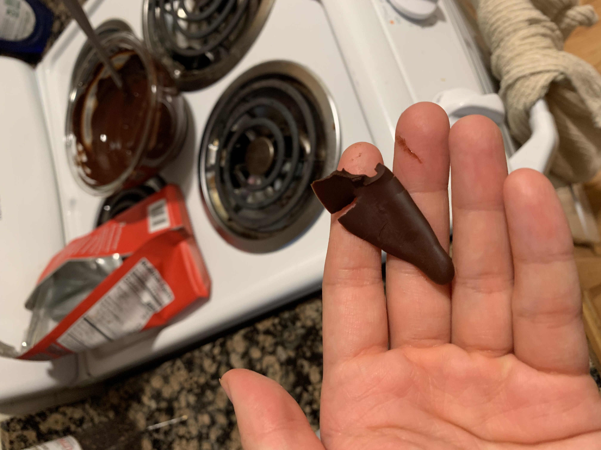
Not to be discouraged, I proceeded with the untempered chocolate: after all, Reese's actually uses untempered chocolate anyway. I set down a layer, starting with the fine details. I plopped a bunch of chocolate on, then bent the model such that the chocolate was encouraged to enter the letters and details. I then filled the entire mold, tapped it to remove bubbles, and tipped it over to remove excess chocolate while leaving a shell around the entire outside. I stuck it in the fridge to set while making the peanut butter filling.
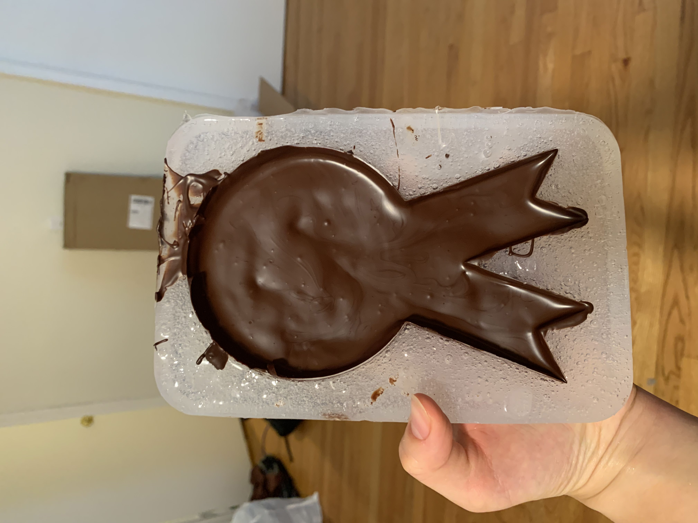
To make the filling, I eyeballed a few tablespoons of peanut butter, added some vanilla extract and salt to taste, then mixed in powdered sugar until it reached a moldable dough consistency.
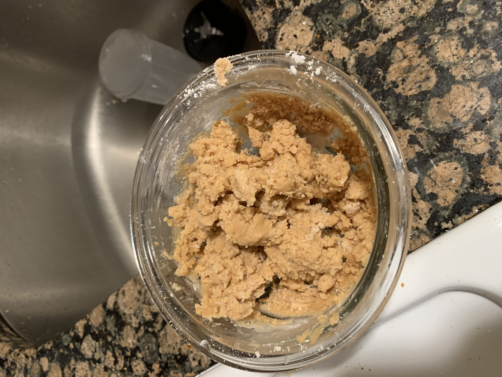
The chocolate shell was done when I finished the PB, so I removed it from the fridge and filled it with a layer of the PB filling, squishing it into an even layer. Finally, I topped with more chocolate, tapped to remove bubbles, and evened it out until flat. After a quick stint in the fridge, it was ready to unmold. This proved quite difficult, as the chocolate wanted to stick in the little details and wanted to come off the PB layer. I probably could've predicted both of these things, but oh well: a slightly cracked giant peanut butter cup is still more fun than an intact brick of chocolate. Here's the somewhat damaged final product, though given how detailed I made the mold, I'm honestly pretty happy with how it came out. I also discovered that my chocolate actually was tempered, since it set at room temperature with a snappy finish. I probably just didn't leave it in the fridge long enough when I initially tested the temper.
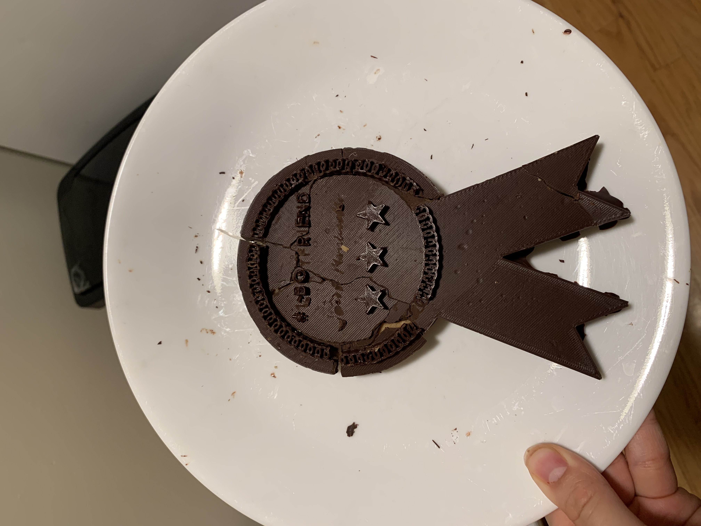
With the extra chocolate and PB filling, I made these truffles by rolling small portions of the PB filling into balls, dipping them in chocolate, and shaking off the excess while holding the truffles on a fork. I also put the rest of the chocolate down on the mat so I could re-use it later. Yum!
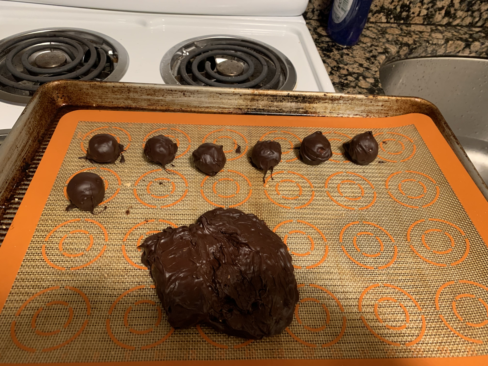
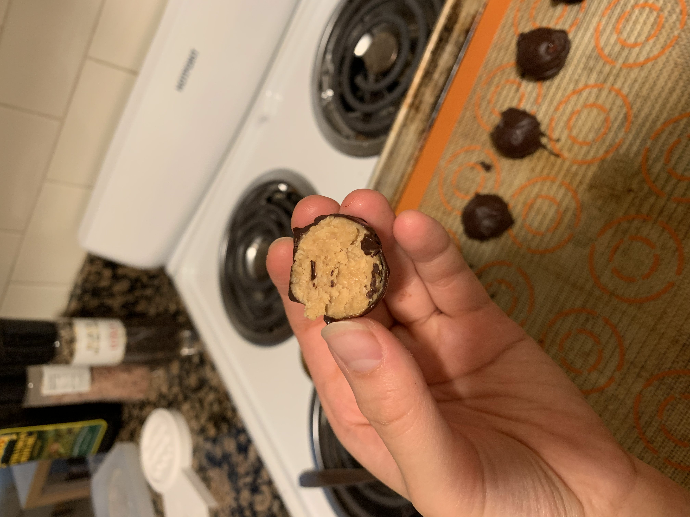